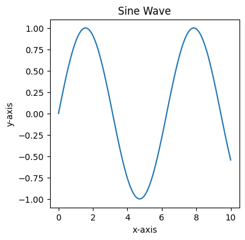
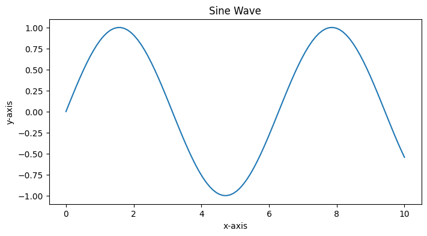
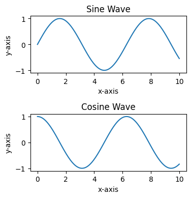
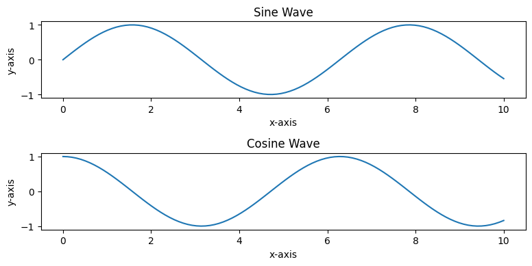

3 Methods to Change Figure Size in Matplotlib
Table of Contents
Introduction
Matplotlib is a popular Python charting toolkit that enables users to construct a wide range of visualizations such as simple line plots, scatter plots, bar charts, and more. When dealing with Matplotlib, one typical question is how to change the size of the figures they make. This post will go over three different ways to change the size of a figure in Matplotlib.
By Isaac Smith on Unsplash

Method 1: Using the figure() function
Matplotlib’s figure() function allows you to generate a new figure and set its properties, including its size. To adjust the size of a figure, use the figure() function using the figsize option. The figsize parameter takes a width and height tuple in inches.
Here’s an example:
import matplotlib.pyplot as plt
import numpy as np
# Generate sample data
x = np.linspace(0, 10, 100)
y = np.sin(x)
# Create a figure with a custom size (width, height)
plt.figure(figsize=(4, 4))
# Plot the data
plt.plot(x, y)
# Set the title and labels
plt.title("Sine Wave")
plt.xlabel("x-axis")
plt.ylabel("y-axis")
# Display the plot
plt.show()
In this example, we draw a figure that is 4 inches wide and 4 inches height.

However, we will find that the aspect ratio of this image is somewhat unbalanced, with the width being a bit too small. Therefore, we want to adjust the width to twice its current size, which is 8 inches.
So let’s change the size by using figure() function.
plt.figure(figsize=(8, 4))

Method 2: Using the rcParams dictionary
The rcParams dictionary in Matplotlib allows you to configure various settings globally. To change the default figure size for all your plots, you can modify the figure.figsize key in the rcParams dictionary.
Here’s an example:
import matplotlib.pyplot as plt
import numpy as np
# Set the default figure size
plt.rcParams["figure.figsize"] = (4, 4)
# Generate sample data
x = np.linspace(0, 10, 100)
y = np.sin(x)
# Plot the data
plt.plot(x, y)
# Set the title and labels
plt.title("Sine Wave")
plt.xlabel("x-axis")
plt.ylabel("y-axis")
# Display the plot
plt.show()
Similarly, we can change the figure size by modifying the following code.
plt.rcParams["figure.figsize"] = (8 4)
Method 3: Using the figsize in subplots()
Another method to change the size of figures in Matplotlib is by using the figsize parameter in subplots() function. The subplots() function creates a grid of subplots and returns a figure object and an array of axes objects. You can specify the figure size using the figsize parameter, similar to the figure() function.
import matplotlib.pyplot as plt
import numpy as np
# Generate sample data
x = np.linspace(0, 10, 100)
y1 = np.sin(x)
y2 = np.cos(x)
# Create a figure with a custom size (width, height) and two subplots
fig, axes = plt.subplots(2, 1, figsize=(4, 4))
# Plot the data on the first subplot
axes[0].plot(x, y1)
axes[0].set_title("Sine Wave")
axes[0].set_xlabel("x-axis")
axes[0].set_ylabel("y-axis")
# Plot the data on the second subplot
axes[1].plot(x, y2)
axes[1].set_title("Cosine Wave")
axes[1].set_xlabel("x-axis")
axes[1].set_ylabel("y-axis")
# Adjust the layout and display the plot
plt.tight_layout()
plt.show()
We can get the following figure.

If we want to double the width, we can change the code like below.
fig, axes = plt.subplots(2, 1, figsize=(8, 4))
